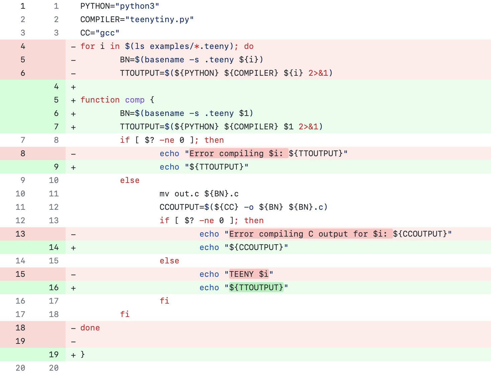

I work on AI + dev tools.
See the discussion of this post on Reddit.
Alright, so we are all spending our leisure time reading about algorithms, right?
Well, back when I was a student, my algorithms courses regularly put me to sleep. This is unfortunate because there are some really interesting algorithms and data structures out there. Not only have they come up during job interviews, but learning them changed how I think about problems. Plus they're useful even if you don't work on Google-scale problems.
Following my other popular posts, challenging projects every programmer should try and more challenging projects every programmer should try, I made a list of interesting algorithms and data structures you should try:
Note: If you need an introduction to algorithms, I recommend Jeff Erickson's Algorithms (Amazon, web) or Daniel Zingaro's Algorithmic Thinking (Amazon). If you want a giant reference, then the classic is Introduction to Algorithms by CLRS (Amazon). Not enough? Watch MIT's Advanced Data Structures (YouTube) to blow your mind.
Anytime you need to sort items that are dependent on other items, you use topological sort. Common scenarios include determining the order of tasks for build systems, the evaluation order of cells in a spreadsheet, which classes a student should take each semester to graduate, and a variety of scheduling problems.
I even used it in graduate school to rearrange graphs to be easier to read.
This one felt like unlocking a super power when it clicked for me. If you ever need to ingest a recursive data format or make a programming language, this is the tool for you. Sketch out a grammar then map each grammar rule to a code function. Bam! It feels like it codes itself.

You could have a simple compiler whipped up in a few hours with it.
Processing strings is such a common programming task, but I can usually get away with brute forcing whatever it is I need to calculate. We've all learned about Levenshtein distance, but what if you need to show the differences between two strings in a sensible way?
The default algorithm used by git for showing diffs is the Myers diff algorithm.
The most known unknown data structure. In fact, I polled some friends at Big Tech about what data structure they'd suggest I add to this list and all of them said bloom filter!
It really only helps with large-scale problem, such as when you need a really big hash table, but it is a great introduction to probabilistic data structures. With very little memory, it can tell you if an item is not present in the table, otherwise it can only tell you maybe the item is present.
Google asked me two interview problems involving these back when I was in college. Have I ever needed this in practice? Nope!
When I first tried making my own text editor, I stored all of the text in an array. But that hits performance problems right away (e.g., when the user inserts text anywhere but the end). Years later I even got asked how to implement a performant text buffer at an internship interview.
What should I have used? Well, there are a few options with different tradeoffs: rope, gap buffer, or piece table. With a piece table, you track the edits performed on text rather than only keeping the resulting text. It makes a lot of other features trivial to add (e.g., undo support and incremental saving).
Piece tables aren't only useful for text editors though. You can use it whenever you have a large buffer of data that can be arbitrarily modified.
How about a self-optimizing data structure? Splay trees are binary trees that will tend to have the more recently accessed elements closer to the root, and it does so without maintaining any additional metadata. Each time an element is accessed, it gets moved to the root.
It's a tree with a builtin cache and it is beautifully simple to implement! As a student, I had a really hard time implementing red-black trees (we wrote the code on paper, ugh) so I was pleasantly surprised when splay trees just clicked for me.
If you are still craving more, here are the honorable mentions that I cut from the list:
Try these out, and let me know if I missed any!